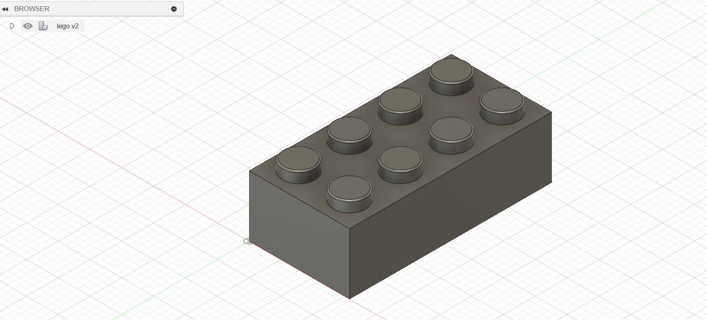

<div class="textcontainer">
<p class="margin"> </p>
<!-- <h3>Week 2: 2D Design & Cutting</h3> -->
<!-- <p class="margin"> </p>
<div class="flexrow">
<a id="btn" href="./week2.zip" download>Download my CAD files from this week!
</a>
</div>
<p class="margin"> </p> -->
<h4>Assignment 1: Create a box</h4>
Nathan provided both an in-class and at-home recorded tutorial for designing a simple finger jointed box
in Fusion, which was very helpful in getting acquainted with the software. The concept was for the box to assemble
from only one cut piece, with cutouts for the finger joints, and then scoring along the base so the walls would fold up.
I wanted to test a smaller version of the box just to become familiar with the laser cutter so I scaled the model down just by eye in Rhino before cutting. I also added some patterns to the faces of the box to experiment with the engrave
functionality.
<p class="margin"> </p>
<!-- <div class="flexrow"> -->
<img src="./small box flat.jpg" alt="small cardboard box" style="width:100%; max-width:200px;">
<img src="./small box 1.jpg" alt="small cardboard box" style="width:100%; max-width:200px;">
<img src="./fusion box file.png" alt="fusion 360 file" style="width:100%; max-width:400px;">
<!-- </div> -->
<p class="caption">Small prototype to test the design and the engraving</p>
The prototype came out well so it was time to cut the real thing. I scaled the design up again
in Rhino, this time with chosen dimensions, and added my initials to the engraving (text object +
hatch in Rhino) so I would be able to easily identify my box. Strangely, the engraving resolution came out
differently on the horizontal lines than on the rest of the pattern - perhaps due to something weird in the settings
(it did take 45 mins to engrave...). Once the cut was finished and I assembled the box, I also realized
I made a mistake when scaling up the design - I scaled up the size of the finger joints along with the rest
of the geometry and they now exceeded the thickness of the material, leading to some over hang when assembled.
But, I kind of like the way it looks and the friction fit was sufficient to forgoe any adhesive so I stuck
with it.
<p class="margin"> </p>
<div class="flexrow">
<img src="./rhino file.png" alt="a rhino file" style="width:100%; max-width:250px;">
<img src="./box final.jpg" alt="a carboard box" style="width:100%; max-width:250px;">
<img src="./box final 2.jpg" alt="a carboard box" style="width:100%; max-width:250px;">
</div>
<p class="caption">File showing engraving, and images of the final box</p>
<p class="margin"> </p>
<p class="margin"> </p>
<h4>Assignment 2: Fusion 360 Tutorial</h4>
<p class="margin"> </p>
Once again, Nathan provided a Fusion YouTube tutorial for modeling a Lego brick, so I went ahead with that.
The video guy was really clear and easy follow, and I had no problem keeping up. Many of the operations I
was already somewhat familiar with from my previous but limited experience in Rhino, but I learned some new
cool methods like Shell, and also learned about organizing components within a design and best habits for
file organization in Fusion 360.
<p class="margin"> </p>
<a href="https://youtu.be/6yPKMSb6ja8" target="_blank">Link to the tutorial</a>
<p class="margin"> </p>
<div class="flexrow">

<img src="./lego 2.png" alt="the same Lego block, viewed from the bottom." style="width:100%; max-width:350px;">
</div>
<p class="caption">Images of the block I modeled from the tutorial</p>
<p class="margin"> </p>
<p class="margin"> </p>
<h4>Assignment 3: Modeling Found Objects</h4>
<p class="margin"> </p>
I was sitting in lab asking my classmate Ariel what to model and he handed me a USB hub - I accepted the challenge.
To go with the hub, I decided to model my universal USB receiver for my mouse as the second object. Using calipers, I measured all dimensions in mm and set off in Fusion to create digital replicas. To be honest, I struggled a bit getting used to the 3D workflow in Fusion so the process is kind of a blur of trial and error. Most of the operating was sketching & extruding to build shapes and volumes, filleting, and chamfering to finish the edges appropriately. To create negative space/cavities I typically went with extruding in the negative direction, although I'm not sure if there is a more suitable alternative. One operator from Rhino that I haven't been able to figure out in Fusion is yet boolean intersection/subtraction, which would have also been helpful. I also used the hole operator to punch holes in the usb hub prongs.
Ultimately, even though I'm sure I could have been more efficient (and hope to be in the future), I'm happy with the way
this came out. I also found the function to hide reference edges in Fusion to give the rendering a softer/more photo realistic look. Next step would be plugging in the receiver!
<p class="margin"> </p>
<div class="flexrow">
<img src="./hub real.jpg" alt="a photo of a USB hub" style="width:100%; max-width:250px;">
<img src="./receiver real.jpg" alt="a photo of a USB receiver" style="width:100%; max-width:250px;">
</div>
<p class="caption">The USB hub and receiver I chose to model in Fusion</p>
<p class="margin"> </p>
<div class="flexrow">
<img src="./USB Hub.png" alt="a CAD model of a USB hub and receiver" style="width:100%; max-width:450px;">
<img src="./USB Receiver.png" alt="a CAD model of a USB hub and receiver" style="width:100%; max-width:450px;">
</div>
<p class="caption">The final models</p>
</div>